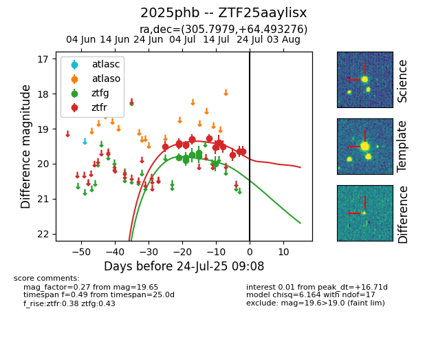

Target ZTF25aaylisx at 2025-07-24 09:08, see:
FINK: fink-portal.org/ZTF25aaylisx
Lasair: lasair-ztf.lsst.ac.uk/objects/ZTF25aaylisx
ALeRCE: alerce.online/object/ZTF25aaylisx
TNS: wis-tns.org/object/2025phb
YSE: ziggy.ucolick.org/yse/transient_detail/2025phb
alt names
ZTF25aaylisx (ztf,fink)
2025phb (tns,yse)
coordinates:
equatorial (ra, dec) = (305.7979,+64.49328)
galactic (l, b) = (98.6680,+15.19918)
photometry
last ztfg=20.00, ztfr=19.65
8 ztfg, 14 ztfr detections
